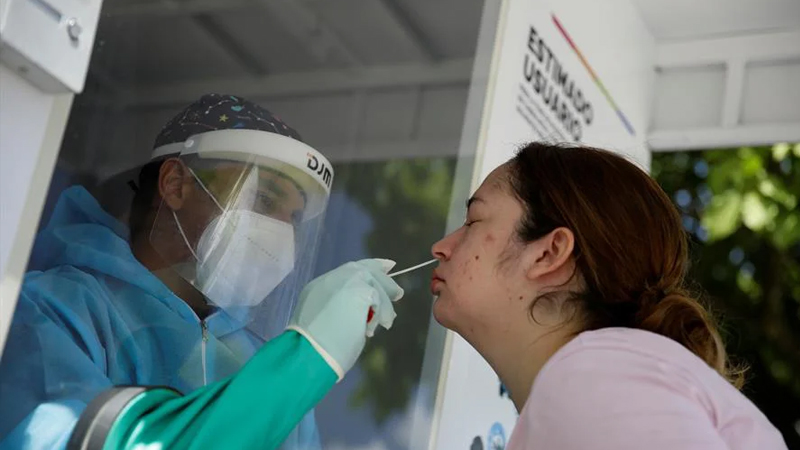
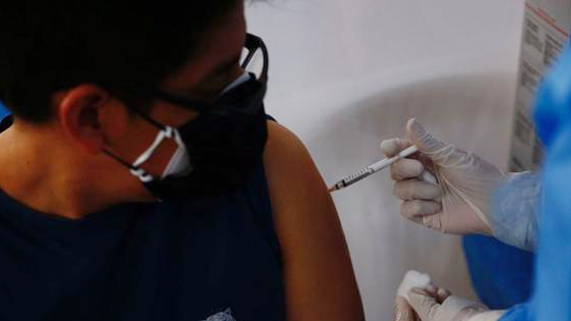

Noticias
COVID-19:Si ya me recuperé de COVID-19 ¿puedo volver a contagiarme?

En las últimas semanas se han registrado casos de personas que, recuperadas de COVID-19, han
vuelto a dar positivo. Aunque la ciencia solo tiene hipótesis hasta ahora sobre las reinfecciones,
algo es seguro: todos, incluso los recuperados, debemos mantener las medidas de seguridad para
evitar contraer el virus.
El reto de encontrarlos
El asunto se complica debido a que las muestras de este virus deben estar refrigeradas a -70°C,
según la Organización Mundial de la Salud, así que tener suficientes refrigeradores para guardar
todas las muestras requiere espacio y recursos. Por lo cual, la mayoría de los laboratorios
guarda las muestras durante una o dos semanas.
Quienes sí pueden almacenarlas durante más tiempo son los grupos de investigación como el de Paúl
Cárdenas en la USFQ, en los que se invita a las personas a formar parte del estudio y a darles
seguimiento en caso de que vuelvan a registrar síntomas.
Ministro de Salud sobre aplicación de tercera dosis de vacuna: “Se está evaluando y estamos
elaborando protocolos”

El sector indicó que a la fecha se elabora también protocolos para la vacunación a adolescentes
y de menores de edad sin comorbilidades.
El ministro de Salud, Hernando Cevallos, informó este sábado que especialistas del sector vienen
trabajando en la elaboración de un protocolo de inmunización ante una eventual aplicación de una
tercera dosis de vacuna contra el coronavirus. Reiteró que el Gobierno peruano continúa evaluando
la posibilidad de aplicar un refuerzo, luego que la Administración de Alimentos y Medicamentos
(FDA, en inglés) de Estados Unidos, autorizó una tercera dosis de la vacuna de Pfizer para los
mayores de 65 años y también para mayores de edad en riesgo de salud o especialmente expuestos
al COVID-19 en ese país.